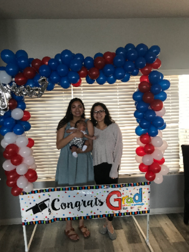
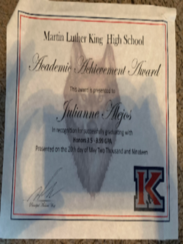
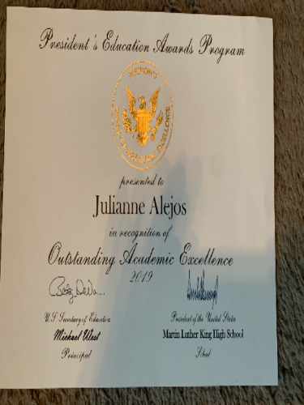
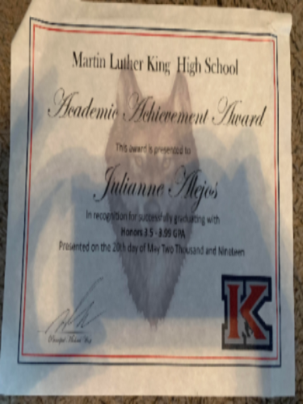
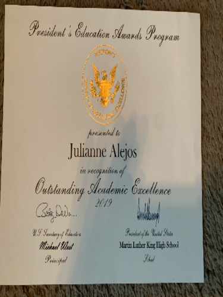

Julianne Alejos
Hello, my name is Julianne Alejos and I am currently a college freshman as an English major at the University of California-Riverside (UCR). I am a full-time student who is active in both her school and community. I am a first-generation college student, which has motivated me to pursue higher education to achieve success financially and intellectually. Growing up in a family who no one has ever been enrolled in a four-year college, I have been motivated by a very young age to pursue my greatest dream, becoming a writer. Writing has been a passion of mine since I was in elementary school. Growing up, I would read an endless amount of books and I had grown up to admire those who could bring their imaginations alive through a merely a series of pages. As I grew up, my admiration of authors had transformed into one of the journalists. Through my writing, I want to be an effective storyteller, so my audience can envision a picture merely through my words. Most importantly, I wish to connect with an audience of all demographics because I want my work to convey a universal meaning.
Along with school, I have grown as an individual through my work experience. My first job was in high school where I worked as a school newspaper editor, which helped me learn to work efficiently independently and collaboratively. My tasks included scheduling and assigning duties to staff writers, reviewing and editing articles, and leading team-building exercises. Recently, I worked as a seasonal cashier at Target where I greeted and assisted customers by collecting payments of cash, check, or charge payments from customers. Also, I quickly acquired the necessary skills to use the new technology, which was an electronic cash register. Along with this, I was hired to bag customers’ groceries or purchases in accordance with best practices to avoid damage to customers’ items and to maintain a balanced register and restocked items for the front register lanes as needed. Also, I previously worked as a sales representative at the clothing store, American Eagle Outfitters. As a salesperson, I was there to assist customers in sales with one-on-one styling experience. Also, I organized the display and stock shelves, which gave me the experience working independently. Lastly, I worked primarily in the fitting room where I directed customers to the fitting room and provided assistance when necessary. Also, I upheld the fitting room standards by ensuring it was clear of merchandise, hangers, and other items. Through my experience in the school and work environment, I’ve gained strong analytical, organizational, verbal, and written communication skills. Also, I’ve become a hard-working team worker who can easily adapt to varying and highly dynamic working conditions.
Experience
Cashier
• Maintain a balanced register
• Assist customers by collecting payments of cash, check, or charge payments
• Bag customers' groceries or purchases
Seasonal Salesperson
• Assist customers in sales with one-on-one styling experience
• Organize display and stock shelves
School Newspaper Assistant Editor
• Scheduling and assigning duties to staff writers
• Reviewing and editing articles
• Leading team-building exercises
Education
UC Riverside
Portfolio




 